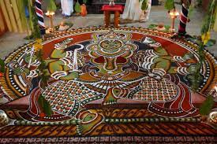

KERALA

The ancient ritual of Kalamezhuthu in which, coloured powders made from natural ingredients are mixed with equal measures of devotion, passion and beauty and then applied to create detailed images of deities, will answer all your queries.
Though associated with temples in Kerala, Kalamezhuthu has elements of tribal and Dravidian cultures. It is an integral part of rituals like Ayyappan Theeyattu, Bhadrakali Theeyattu, Sarpam Thullal, Mudiyettu, and Kalampattu.
The coloured powders used for the Kalam (surface of the ground marked for drawing) are prepared from natural products. The pigments are extracted from plants - rice flour (white), charcoal powder (black), turmeric powder (yellow), powdered green leaves (green) and a mixture of turmeric powder and lime (red). It often takes more than two hours to finish a Kalam drawing with appealing perfection. Decorations like a canopy of palm fronds, garlands of red hibiscus flowers and Thulasi or Ocimum leaves are hung above the Kalam.